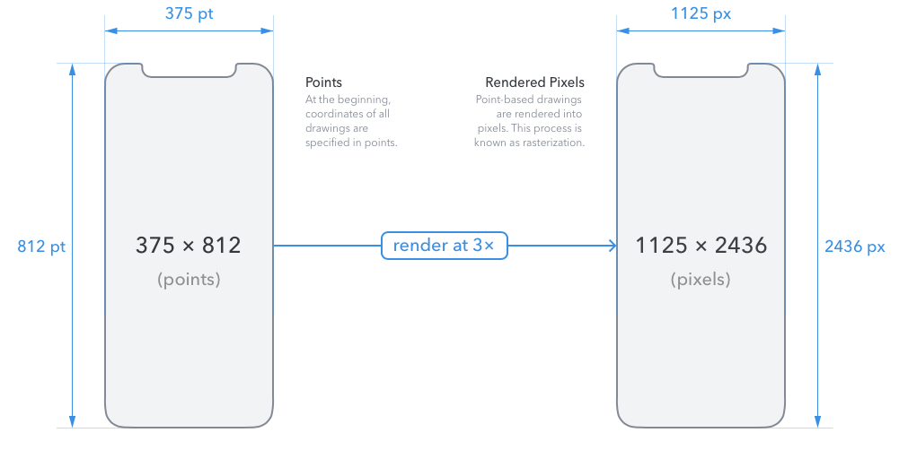
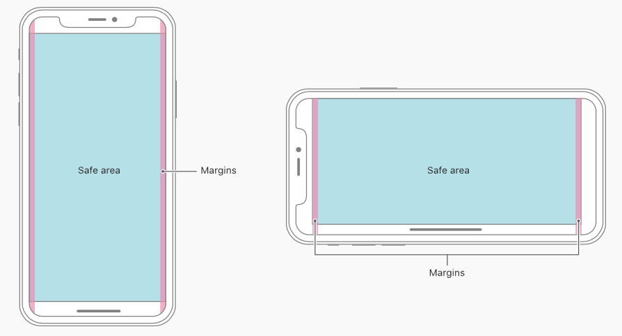
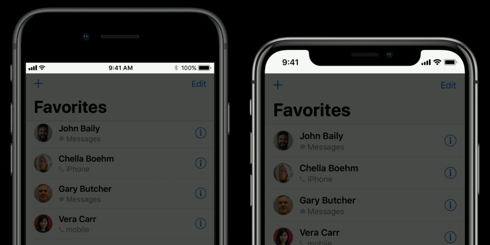
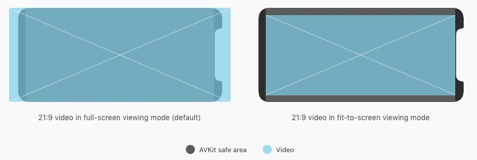
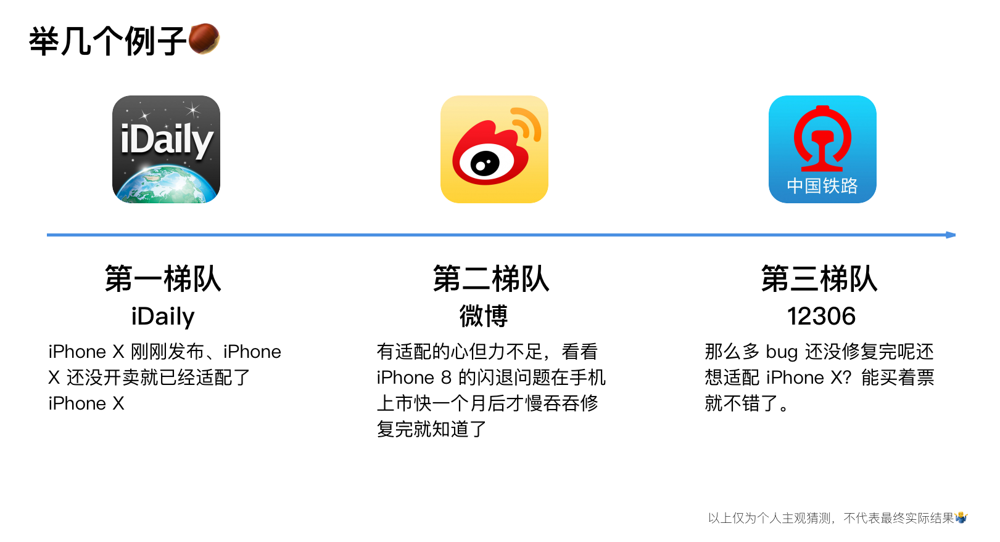
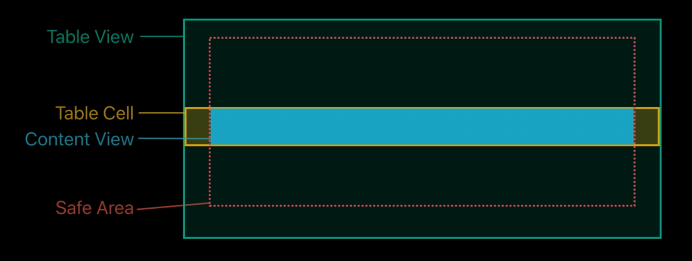

Apple 在 2017 年 9 月的秋季发布会上正式发布了 iPhone X。iPhone X 与之前的 iPhone 不同，为了达到全面屏的效果，实体 Home 键被屏幕底部的 Home Indicator 取代，屏幕的四个角由直角变为了圆角，屏幕比例也不再是常见的 16:9，更引人注意的是屏幕顶部还有一个特殊的 Sensor Housing，也即人们俗称的刘海。这些变化对 iOS app 甚至网站的适配都提出了挑战，或多或少会影响你正在使用的 app 的功能与交互。
iPhone X 首次亮相：
Note：
- 文章从与 iPhone X 有关的交互设计和视觉设计出发，略有提及一些开发相关问题✍️
- 由于仅是略懂一些开发的皮毛，文章中开发相关的问题的描述大部分是根据已有资料的自己理解，难免有不准确或错误的地方。如有发现，欢迎指出🖐
文章中大部分图片资源引用自 Apple 官方，一部分引用自一些其他文章。这部分均已标注出处，如果您是这些文章的作者且觉得这些引用不合适，请尽管告诉我，我会尽快删除🤝
更新记录：
- 11 月 13 日：增加了有关于 iPhone X 上播放视频的「视频」部分。
扩展阅读：
2018 年 Apple 发布了新款 iPhone — iPhone Xs、iPhone Xs Max、iPhone Xʀ 和新款 iPad Pro — iPad Pro 11″、iPad Pro 12.9″（第三代），想了解新设备的设计与适配故事，推荐阅读下面两篇文章：
目录
- 目录
- 前言
- 屏幕尺寸
- Safe Area
- 布局
- 图片
- 控件
- Status Bar
- Home Indicator
- 颜色
- 视频
- 手势
- 按键
- Face ID
- 键盘
- 适配
- iOS 11 常用 UI 标准控件的尺寸对照
- Read More
前言
针对 iPhone X 这些独特的新特性，有些人在网上提出了一些有趣的「解决方案」，比如：
横屏时，列表滚动时文字优雅地略过刘海：
（图片来源：Vojta Stavik 的 Twitter: “I think I’ve fixed the notch issue in landscape 🍾 ”）横屏时，列表滚动时滚动条的怪异移动路径：
（图片来源：Zev Eisenberg 的 Twitter: “Here’s what the notch would look like on the other side 🍷"）将刘海作为 UI 的一部分，从刘海里拉出工具菜单：
有人假设设置里可以控制刘海的「开与关」🙃：
据说 iPhone X 发布后，天猫成为了最大赢家😅：
甚至有人做出了一个快速适配方法，直接将你的 app 放置在 iPhone X 屏幕中间算完😶：
（暂时没找到原始来源）

上面这些方法真的好吗？关于 iPhone X 的适配到底应该怎么做？这篇文章的目的就是结合 Apple 提供的一些官方资料加上网上大家对 iPhone X 的一些探索，系统地梳理下 iPhone X 在 UI 上的变化和应对方法。
屏幕尺寸
在纵向时，iPhone X 的宽度同 4.7 寸的 iPhone 6、iPhone 7、iPhone 8（也包括放大模式下的 iPhone Plus）一样，故在宽度上，这几个设备显示的内容应该是一样的；而 iPhone X 的高度上比 4.7 寸屏幕高了 145pt，这使得 iPhone X 增加了 20% 的垂直空间来显示内容。
- iPhone 6, 6s, 7, 8（4.7 寸屏幕，9:16，326ppi）：375pt × 667 pt @2x → 750px × 1334px；
- iPhone 6 Plus, 6s Plus, 7 Plus, 8 Plus（5.5 寸屏幕，9:16，401ppi）：414pt × 736 pt @3x → 1242px × 2208px （设备显示时的物理像素为 1080px × 1920px）；
- iPhone Plus 的放大显示模式：375pt × 667 pt @3x → 1125px × 2001px（设备显示时的物理像素为 1080px × 1920px）；
iPhone X（5.8 寸屏幕，约 9:19.5，458ppi）：375pt × 812 pt @3x → 1125px × 2436px；

（图片来源：iPhone X Screen Demystified）
iPhone X 外壳的一些参考尺寸标注：
（图片来源：iPhone X Screen Demystified）iPhone 6, 7, 8, X 横屏时在 Size Class 中都属于 Compact Width，这意味着在这些设备上的横屏布局应该是一致的。
需要为 iPhone X 提供 @3x 的高分辨率的图片素材，对于一些单色的图形（Apple 称之为 Glyph，如用于 tab bar、tool bar 上的 icon）推荐使用不依赖分辨率的 pdf 格式。
Safe Area
- 从 iOS 11 开始，Auto Layout 中增加了一个新的布局指南：Safe Area Layout Guide，废弃了在 iOS 11 之前的 Top Layout Guide 和 Bottom Layout Guide。
在 iPhone 8 中，Safe Area 的区域即除去各种 bar 之后的区域，如果没有任何 bar，Safe Area 就是整个屏幕。iPhone 8 竖屏下的 Safe Area 大小：375pt × 667pt。
在 iPhone X 中，竖屏下的 Safe Area 顶部距屏幕顶端 44pt，底部距屏幕底端 34 pt，左右两边与屏幕左右两端对齐。这样竖屏下的 Safe Area 大小：375pt × 734pt，相比 iPhone 8 增加了 67pt。横屏下的 Safe Area 左右两边距屏幕左右两端均为 44pt（对称），底部距屏幕底端 21pt，顶部与屏幕顶端对齐。Safe Area 避免了内容与屏幕的圆角、Sensor Housing、Home Indicator 发生重叠或裁切。

例如，在 iPhone X 的横向视图中，table view 将会横跨整个屏幕，而 table cell 中的 content view 是嵌入其中的，即在 Safe Area 中，以避免内容被 Sensor Housing 覆盖或被屏幕圆角裁切。
Table view cell 中的 content view 会被限制在 Safe Area 中，而文本内容和控件又进一步被 Layout Margin 限制，这使得在整个 app 中的内容边距能够保持一致，并且内容能够与其他控件（如 navigation bar 上的按钮）对齐。即使你的 app 中没有使用 Auto Layout，UIView 也提供了 Safe Area 嵌入和 Layout Margin 属性的值。

布局
确保内容充满整个 iPhone X 屏幕，确保内容不要被设备的圆角、传感器模块（Sensor Housing，也即刘海）、主屏幕指示器（Home Indicator）遮盖。
例如「Carrot Weather」针对 iPhone X 的适配，让天气的背景延伸到屏幕边缘：
可以使用 Xcode 中的模拟器提前预览 app 在 iPhone X 上的效果，检查被裁切或者其他布局问题。而对于一些特别的功能特征，像广色域图像，最好就是在 iPhone X 真机上进行测试。
提供一个全屏的使用体验：确保背景延伸到了屏幕的边界，像 tables、collections 这种竖直滚动的布局要一直延续到屏幕底部，不应被限制在 Safe Area 中。不管 table view 中的 cell 是否在 Home Indicator 的后面，轻点屏幕底部的 cell 依然可以正常操作。

图片
当复用已有的图片资源时，注意长宽比率的不同：iPhone X 有一个特殊的长宽比率，因此，在 4.7 寸屏幕上的图片资源全屏展示在 iPhone X 上时，可能会被左右裁切或者出现信箱 letterboxing 模式（即上下有黑条）。与之相反，如果一个可以全屏显示在 iPhone X 上的图片资源拿到 4.7 寸 iPhone 上去，图片就会被上下裁切或者出现邮筒 pillarboxing 模式（即左右有黑条）。最好是采用兼容性的图片，以确保在所有的屏幕尺寸中，重要的视觉内容都能被看到。
控件
不要对屏幕的几个新特征进行掩盖或者吸引用户特别注意：不要尝试通过在屏幕顶部或底部使用黑色的 bar 来隐藏设备的圆角、Sensor Housing、Home Indicator，这会使得你的 app 看上去很狭小拥挤，与其他在 iPhone X 上的 app 不一致。不要使用一些视觉装饰物（如括弧、边框、形状或指导性文字）使用户对这些区域特别注意。
避免内容被裁切：使用标准的、系统提供的交互元素，使用 Auto Layout 构建 app 的交互。App 应该遵守由 UIKit 定义的 Safe Area 和 Layout Margin，这确保内容可以根据设备和情景合适的嵌入。 Safe Area 也会阻止内容被 status bar、navigation bar、toolbar、tab bar 覆盖。

避免把一些交互控制元素恰好放置在屏幕的底部或者角落：用户在使用 iPhone X 时，会在屏幕底部使用滑动手势来访问主屏幕或者切换 app，这个手势会影响你在屏幕底部自定义的手势。屏幕的几个角落放置的内容可能会被屏幕的圆角、Sensor Housing、Home Indicator 遮挡覆盖，并且对于用户来说也是难以轻松地触碰到的。可以通过 Safe Area 和 Layout Margin 来确定合适的嵌入值。
大多数情况下，在横屏视图时，内容、控件能够居中对称显示是最好的。在设备旋转方式不同的情况下，如果是不对称的布局，控件会左右发生漂移，这将会造成不连贯的用户体验，潜移默化地破坏用户建立肌肉记忆的能力。
Status Bar
注意 status bar 的高度：在 iPhone X 中，相比其他 iPhone status bar 更高（iPhone X 的 status bar 高度为 44pt，其他设备为 20pt）。如果你的 app 假定了一个固定的 status bar 高度，以此来在 status bar 下面放置内容，你必须更新你的 app 以基于用户设备动态放置内容。

特别注意，在 iPhone X 中，当某些后台任务（如通话中、录音中、位置记录中）进行时、status bar 不会像其他 iPhone 一样改变高度。这为提供连贯的用户体验提供了帮助。
如果你的 app 现在是隐藏 status bar 的，你需要在 iPhone X 上重新考虑这个：iPhone X 在垂直方向上比 4.7 寸 iPhone 提供了更多空间来显示内容。Status bar 中也展示了用户觉得很有用的信息。Status bar 应该只在真正有价值的时候被隐藏。
Home Indicator
Home Indicator（134pt × 5pt）可以提示用户从屏幕底部向上轻扫可以访问主屏幕或者切换 app，这是 iOS 设备的一个核心交互，因此 Home Indicator 应该总是被清晰可见的。iOS 会根据当前的背景颜色，动态地调整 Home Indicator 显示为白色或黑色，以保证与背景有足够的对比度。确保不要把一些交互元素放的离 Home Indicator 很近。
谨慎地允许 Home Indicator 可以自动隐藏：当自动隐藏功能被打开时，如果用户在几秒钟没有触碰屏幕，Home Indicator 就会自动隐藏，用户再次触碰屏幕时，Home Indicator 就会再次出现。这个行为只应该在像播放视频、图片幻灯片时被启用。
避免与系统全局的屏幕边缘手势冲突：在各个 app 中，人们依赖于这些手势。只在很少的一些情况下，一些沉浸式的 app 如游戏类 app 可能需要一些比系统手势优先级更高的自定义的屏幕边缘手势，第一次滑动响应 app 指定的手势（同时正常的 Home Indicator 会被拉起并进入可用状态），第二次滑动才响应系统的手势。这个行为被称为 edge protection，一旦开启，Home Indicator 将会有一个更加细致的外观，对于用户来说就很难访问系统级别的动作，导致不连贯的用户体验，所以它只应该在确实需要的情况下被启用。
颜色
iPhone X 的屏幕支持 Display P3 色域，相比 sRGB 可以显示更加多样、沉浸的颜色。
使用广色域来增强视觉体验：使用了广色域的图片和视频会看上去更加生动，视觉数据和状态指示器会更加有冲击力。
视频
系统提供的视频播放器提供了两种视频播放模式：全屏播放模式 full-screen (aspect fill) 和适应屏幕播放模式 fit-to-screen (aspect)。默认情况下，系统会基于视频的纵横比选择一种视频播放模式，在播放过程中，用户可以在这两种模式之间自由切换。
全屏播放模式 Full-screen (aspect-fill) viewing mode：视频会按照视频比例进行放大以铺满整个屏幕。一些边缘切割会出现。对于宽幅视频（纵横比在 2：1 到 2.40：1 之间），全屏播放模式是系统的默认选择。

适应屏幕播放模式 Fit-to-screen (aspect) viewing mode：屏幕里可以完全显示完整的视频。信箱模式或邮筒模式会出现。对于标准的视频（纵横比 4：3、16：9、低于 2：1的）和超宽幅视频（纵横比大于 2.40：1），适应屏幕模式是系统的默认选择。
确保自定义的视频播放器的表现符合预期：在 iPhone X 中，默认铺满屏幕的全屏播放模式的视频，如果铺满全屏导致太多的内容被裁切，那视频就应该调整显示尺寸以适应屏幕的模式播放。你也应该允许用户基于他们的个人偏好在两种播放模式间自由切换。
视频播放时总是保证其原始纵横比：如果你的视频内容为了服从某个特定的纵横比，自行插入了一个信箱或邮筒边距，iOS 将不能够基于用户对视频播放模式的选择正确的调整视频显示尺寸。在视频框架中插入的边距会造成视频在全屏播放模式下和适应屏幕播放模式下变得更小。它也使得视频不能被正确地以边到边的方式显示，也会影响非全屏情景（如 iPad 上的画中画模式）下的视频显示。
手势
- 在 iPhone X 中使用屏幕边缘来触发访问主屏幕、app 切换、打开通知中心、打开控制中心的动作。
Home Indicator 相关手势：
访问主屏幕：向上轻扫 Home Indicator

访问多任务处理：向上轻扫 Home Indicator 并停顿一下

切换到上一个使用的 app：向上轻扫 Home Indicator 并顺势向右滑动

(图片来源：iMore)左右快速切换 app：左右轻扫 Home Indicator

便捷访问 Reachability：也即在 iPhone 8 上通过轻点两下 Home 键界面下移悬停的功能。在 iPhone X 使用此功能，需要到「设置」-「通用」-「辅助功能」中打开「便捷访问」开关，使用时，向下轻扫 Home Indicator 即可。
刘海相关手势：
访问通知中心：从「刘海」处或左侧向下轻扫

(图片来源：The Verge)访问控制中心：从「刘海」右侧向下轻扫

按键
由于 iPhone X 取消了实体 Home 键，引入了 Home Indicator，原来的电源键现在称之为「侧边按钮」，这使得原有的一些功能的操作方法发生了变化。
使用 Siri：按住侧边按钮。

使用 Apple Pay：连按两下侧边按钮。

截屏：按住侧边按钮加音量增按钮。
进入 SOS 紧急联络：按住侧边按钮和任一音量按键、快速点按侧边按钮五次（需在设置中开启），SOS 紧急联络中包括「滑动来关机」、「医疗急救卡」、「SOS 紧急联络」三个功能。
关机：先进入「SOS 紧急联络」再滑动来关机、设置-通用-关机
强制重启：按下再快速松开调高音量按钮，然后按下再快速松开调低音量按钮，最后，按住侧边按钮 10 秒。
进入恢复模式：将设备连接到电脑，打开 iTunes，按下再快速松开调高音量按钮然后按下再快速松开调低音量按钮，最后按住侧边按钮，直到看到恢复模式屏幕（连接 iTunes 的图示）。
Face ID
在 iPhone X 中，Face ID 替代了 Touch ID，这使得某些操作和体验有了变化：
指纹的识别变成了面容的识别：

拿起手机唤醒屏幕，Face ID 完成面容识别，同时从屏幕底部向上轻扫进入系统：

拿起手机唤醒屏幕，同时 Face ID 完成识别，系统显示通知的具体内容（需要配合 iOS 11 中「设置」-「通知」-「信息」-「显示预览」选项-「解锁时」）：

识别 Face ID 后，使用 Apple Pay 付款：
准确的定义授权方法：iPhone X 只支持 Face ID 授权，如果你的 app 使用了 Apple Pay 或者其他系统授权功能，不要在 iPhone X 上提及 Touch ID。与此相反，在只支持 Touch ID 的设备上不要提及 Face ID。
Apple 关于 iPhone X 的基本使用的指导视频：
键盘
不要重复系统提供的键盘功能：在 iPhone X 上，Emoji 和 Globe 按钮以及 Dictation 按钮会在键盘的下方自动出现，即使用户使用的是自定义键盘。你的 app 不能影响这些按钮，也要避免在你的 app 的键盘中重复这些而造成困惑。
在 iPhone X 中，全字母键盘的高度由 216pt 增加到了 291pt，在设计文字输入区域时要注意。
适配
App 的适配
大多数使用标准的、系统提供的 UI 元素（如 navigation bars、tables、collections）将会自动适配 iPhone X。背景将会延伸到屏幕的边界，UI 元素将会被合适的插入和放置。比如 navigation bar 的背景色会自动延伸到 status bar 中，tab bar 、tool bar 会被合适的放置在 Home Indicator 上面，其背景色也会延伸到屏幕底端。
如果你的 app 使用了 Auto Layout，并且遵守了 Safe Area 和边界的布局规范，即使是使用了自定义布局，适配 iPhone X 也很简单。
要特别注意测试横屏下的界面：大多数的适配问题可能都来自于横屏界面。
对于没有适配 iPhone X 的 app 在 iPhone X 中可能不能全屏显示。在竖屏的情况下，顶部是 status bar，底部是 Home Indicator，中间部分以信箱 letterboxing 模式（即上下有黑条）显示未适配的 app，显示区域同 4.7 寸的 iPhone 8 一样大小。
(图片来源：How iOS Apps Adapt to the iPhone X Screen Size – Geoff Hackworth – Medium)在横屏的情况下，会以邮筒 pillarboxing 模式（即左右有黑条）显示未适配的 app，同时屏幕底部会为 Home Indicator 留有一定的空间，整体上比 iPhone 8 的横屏模式还稍微小一点。
（图片来源：How iOS Apps Adapt to the iPhone X Screen Size – Geoff Hackworth – Medium）从未适配的 app 在 iPhone X 上的显示可以很明显的看出，iPhone X 就是 4.7 寸的 iPhone 8 的拉长版，但是由于 iPhone X 使用的是 @3x 图片资源，再加上 OLED 屏幕的加成，未适配的 app 看上去的视觉效果可能更像是在一部屏幕高配版 iPhone 8 上看。
从 iPhone 8 到 iPhone X 的过渡就如同当年从 iPhone 4s 到 iPhone 5 的过渡，可以预见在 iPhone X 上市初期会有众多 app 还没有来得及或还没有找到合适的解决办法适配 iPhone X，抑或正在适配的路上苦苦摸索，最先使用 iPhone X 的用户在尝鲜的同时也会有一段混合使用已适配 app 和未适配 app 的痛苦期。从 app 市场的现状来看，对于一些紧密跟随 iOS 新技术、由独立开发者/小团队开发、有一定用户规模的 app （这类 app 反而会较多使用系统标准控件，响应用户、跟进新特性也比较及时😎）会较快适配 iPhone X，而对于一些逻辑复杂、牵一发而动全身、只追求能用不追求好用的 app（这类 app 使用系统标准控件较少，经常出现一些自以为很炫酷但实际很反人类的交互，而且修改 bug、适配新特性还不积极🙄，如银行 app、12306等），我们能做的只有慢慢等了。

注：点此查看 iDaily App 适配 iPhone X 后的效果图（由于目前 iPhone X 还没正式发售，Apple 暂不允许在 AppStore 中的 app 介绍中存在有关 iPhone X 的文字、图片、视频资源，已经上架的纯属巧合，其实就是看 Apple 的心情😴）虽然前期痛苦，但是随着 iPhone X 用户数的上升，市场和 Apple 都会推着开发者去适配 iPhone X。待适配大潮逐渐稳定之后，那时候我们或许就能见到拉长版的 iPhone 8 Plus 了—— 名字该叫 iPhone X Plus 还是 iPhone XI Plus🤔？在这里大胆猜测下，拉长版的 iPhone 8 Plus 应该与 iPhone X 同一个屏幕比例，按照相对于 iPhone 8 Plus 宽不变高拉长的规律渲染分辨率应该是 1242px × 2688px，如果物理分辨率也是同样的话，再加上传闻的 6.4 寸屏幕，PPI 差不多是 463。等明年看看咯。
Update：10 月 27 日，Apple 发布公告提醒开发者现在可以开始在 iTunes Connect 中提交适配了 iPhone X 的 app、更新 app 的元数据信息了。有关于个人使用的一些 app 适配 iPhone X 的时间记录可以查看我的另一篇文章。
App 适配实例
以适配 WWDC app 为例，说明在适配过程中遇到的布局问题和如何修复它们。
WWDC app 的历史已经很长，好多工程师曾经为它贡献过代码。在其中，它使用了许多标准控件和 Auto Layout，它也有很多自定义的 view，甚至更老的部分是完全手动布局的。
在 Xcode 9 中配置 WWDC app 的 Base SDK 为 iOS 11。如果你没有看到 app 在 iPhone X 的屏幕上全屏显示，请确保你配置了一个正确的 Launch Storyboard。
News tab：全屏的照片查看器中的 page control 离屏幕底部太近了，与 Home Indicator 跑到了一起。这是因为 page control 是根据其父视图（也即整个屏幕）限定的底部的布局约束，我们需要根据 Safe Area Layout Guide 对 page control 的底部做出布局上的约束。
在 xib 文件中打开 「Use Safe Area Layout Guides」（在 Xcode 9 之前创建的 xib 和 storyboard 不会自动打开此选项）。对于 iOS storyboard，打开这个选项后会自动把约束与屏幕的 top layout guide、bottom layout guide、leading edges、trailing edge 绑定，所以在开启后需要仔细检查确认 Auto Layout 的约束。
将 page control 的约束「Superview.Bottom = Page Control .Bottom」改为「Safe Area.Bottom = Page Control .Bottom」。
编译并运行，可以看到 page control 无论在竖屏还是横屏时均显示正常。
Videos tab：进入搜索功能，与「通讯录」app 对比后可以发现 search bar 的背景颜色不对，其尺寸也有些问题。
当进入横屏时，问题更加明显。search field 和取消按钮都被屏幕的圆角切割了。由此也看出 Safe Area 的重要性。
在 iOS 11 中，search bar 已经与 navigation bar 整合在了一起，而不再是一个单独的 UI search controller。在代码中做出如下变动：
在 navigation bar 接管 search bar 之后，剩下的工作就交给 Safe Area 就好了。编译并运行，可以看到 search bar 在竖屏与横屏下都显示正常了。
Schedule tab：因为把 search bar 作为了 table view 的 header view，search bar 也有着与 Videos tab 同样的显示问题。只需像前面说的那样，把 search bar 交给 navigation bar 来处理就好了。在横屏时，如果仔细看会发现还有一个问题，table section 的背景颜色没有延伸到屏幕的左右边缘，这个颜色是我们设置的 header view 中的
contenView的背景颜色。在除 iPhone X 以外的 iPhone 上这样配置都是没有问题的，那为什么会在 iPhone X 上出现问题呢？要想明白其中的原因，先来看下在 iPhone X 中 table view 的整体结构。从下图中可以看到 content view 是默认被嵌入 Safe Area 的，而 table cell 本身是从屏幕一端到另一端的，这就是问题所在。

对于 content view 嵌入 Safe Area 这个行为是可以控制的，解除这个限制后 content view 就能从屏幕一端显示到屏幕另一端。有一点需要注意，不管 content view 如何布局，其 layout margin 都是默认与 Safe Area 相关的。所以解决问题的一个办法就是禁用 content view 嵌入 Safe Area 的行为，但这样一来就会影响 content view 中的其他内容，也没有办法再使用这项挺有用的默认行为。
最好的的解决办法就是设置 header 中 backgroundView 的 background color。
编译并运行，可以看到 table view 的 section 的背景颜色已经从屏幕的一边延伸到了另一边。
总结
- 基于 iOS 11 SDK 进行编译，确保有正确的 Launch Storyboard；
- 在两个屏幕方向都进行充足的测试，特别是横屏情况下；
- 遵守 Safe Area：
- Auto Layout 时使用
safeAreaLayoutGuide - 手动计算时使用
safeAreaInsets - 避免 app 中的内容与控件与系统的 Home Indicator 发生冲突。
- Auto Layout 时使用
网页的适配
因为 iPhone X 的显示屏的四个圆角、顶部的 Sensor Housing 特性，通过 Safari 打开的网页，iOS 也进行了自动的特殊处理。
当设备处于竖屏情况下，网页的显示与其他设备没有什么差别，相比 iPhone 8 就是纵向上能看到更多内容。

当设备处于横屏情况下，为了确保网页上的内容不被屏幕圆角、Sensor Housing 遮挡，所有内容、控件会被限制在 Safe Area 中显示，而 Safe Area 左右两侧会被页面的
background-color(比如为<body>或<html>元素指定的背景颜色)填充。通常情况下我们看到的网页背景颜色都是白色，例如下图中在 iPhone X 的 Safari 中打开的 Medium 官网， 背景颜色是白色，整体上除了白色基本就是黑色的文字，这样看上去效果还不错。
再举一个例子，下图中在 iPhone X 的 Safari 中打开 Apple 官网，同样的页面背景色为白色，但由于横跨整个页面的灰色导航栏和非白色背景的近乎全屏的图片的存在，左右两边的白边看上去比较突兀，整体效果比较奇怪。（Update：Apple 官网首页目前已为 iPhone X 做了适配）
iPhone X 的屏幕比例约为 9:19.5，不再是之前常见的 9:16，这对于靠「等比缩放」完成适配的 HTML5 活动页面来说，需要针对 iPhone X 调整页面布局结构。
(图片来源：三分钟弄懂iPhone X 设计尺寸和适配|UI|教程|海边来的设计师 - 原创文章 - 站酷 (ZCOOL))
网页适配实例
下面这个网页，网页的背景颜色不是白色，整个页面背景色延伸到了屏幕边缘，但横跨整个页面宽度的上下两个导航栏被限制在了 Safe Area 中，视觉上看上去很奇怪。底部的导航栏还与 Home Indicator 发生了重叠，这会导致按钮很难点击。这样的网页就需要针对 iPhone X 进行调整。
一些必要的调整（由于不熟悉前端网页开发的一些具体实现，只在此说一下大概的原理）
横屏状态下，iPhone X 的 Safari 中默认没有让内容和控件充满整个屏幕。要想使用整个屏幕，需要在 iOS 11 中改变
viewport-fit的值以关闭自动嵌入行为。改变后的网页显示如下图，虽然导航栏可以从屏幕一个边缘延伸到了另一边缘，但是这时内容和控件会被屏幕的圆角以及 Sensor Housing 遮挡。想要既要利用整个屏幕，又要服从 Safe Area，需要给不想被遮挡的重要内容加上一个 padding。iOS 11 的 Webkit 预定义了 Safe Area 上下左右四个方向的边距常量，利用此为页面上的元素添加 padding 后网页上的重要内容就可以正常显示，更改后网页横屏下的效果图如下。
iPhone X 在横屏下的 Safe Area 左右两边的间距都是 44pt，但是在竖屏下 Safe Area 左右两边的间距是 0pt。故通过上面的 padding 设置后，在竖屏下，页面会出现一些问题，文字内容会紧贴屏幕的左边缘。竖屏时对于这里的期望是文字能与屏幕左边缘有一些间距（比如 12px），要实现此，可以将文字部分的 padding-left 设置为取 12px 和 Safa Area 左边间距两者中较大的那个值，这样在横屏时 padding-left 即为 Safa Area 的左边距，在竖屏时 padding-left 即为 12px。（取较大值的这个特性将在以后版本的 iOS 11 中发布，目前已出现在 iOS 11.2 Beta 中）
最终通过一系列的调整，竖屏下的页面效果如下图。
前后整体框架对比：
iOS 11 常用 UI 标准控件的尺寸对照
对于不同设备，在横向和纵向时的 Size Class 是不同的。加之 iPhone X 引入 Sensor Housing 和 Home Indicator 造成的一些特殊性，这就使得在不同的 iPhone 上 UI 标准控件有着不同的尺寸。以下列出了三款典型 iPhone 的常见 iOS 11 UI 标准控件的尺寸。
iPhone 8
- iPhone 8 的 Size Class：竖屏时——Compact width, Regular height，横屏时——Compact width, Compact height。
- Status bar：20pt（电话、录音、位置记录时会变为 40pt）
- 竖屏 navigation bar（包括 status bar）：64（20+44）pt，竖屏下如果有 big title 就再加 52pt
- 竖屏 tab bar：49pt（竖屏下每个 tab：48pt × 49pt）
- 竖屏 toolbar：44pt
- 横屏 navigation bar、tool bar、tab bar：32pt
- Glyph：28pt × 28pt
- 左右建议 Margin：竖屏时 16pt，横屏时 20pt
iPhone 8 Plus
- iPhone 8 Plus 的 Size Class：竖屏时——Compact width, Regular height，横屏时——Regular width, Compact height。
- Status bar：20pt（电话、录音、位置记录时会变为 40pt）
- 横竖屏 navigation bar（包括 status bar）：64（20+44）pt，竖屏下如果有 big title 就再加 52pt
- 横竖屏 tab bar：49pt（竖屏下每个 tab：48pt × 49pt）
- 横竖屏 toolbar：44pt
- Glyph：28pt × 28pt
- 左右建议 Margin：竖屏时 16pt，横屏时 20pt
iPhone X
iPhone X 的 Size Class：竖屏时——Compact width, Regular height，横屏时——Compact width, Compact height。
- Status bar：44pt（电话、录音、位置记录时不变）
- 竖屏 navigation bar（包括 status bar）：88（44+44）pt，如果有 big title 就再加 52pt
- 竖屏 tab bar：49pt（每个 tab：48pt × 49pt）
- 竖屏 toolbar：49pt
- 横屏 navigation bar、tool bar、tab bar：32pt
- Glyph：28pt × 28pt
- Home Indictor Area：竖屏时 34pt，横屏时 21pt
- 左右建议 Margin：竖屏时到 Safe Area 左右两边 16pt，横屏时到 Safe Area 左右两边 20pt
（图片来源：Design+Code - Learn to design and code for iOS 11）
（图片来源：Design+Code - Learn to design and code for iOS 11，图片有改动。关于 iPhone X 横屏下，tab bar 和 Home Indicator 区域经过查找资料我认为应该分别是 32pt 和 21pt，而不是原文中的 30pt 和 23pt。）
最后一起来欣赏下 Apple 为 iPhone X 制作的广告，十分精彩：
Read More
Apple 官方
- iPhone X 官方介绍页面
- iPhone X 设计与开发介绍页面：Update your apps for iPhone X
- iOS Human Interface Guidelines：iPhone X
- iOS Human Interface Guidelines：Adaptivity and Layout
- Video：Designing for iPhone X
- Video：Building Apps for iPhone X
- Designing Websites for iPhone X
- Apple UI Design Resources：iPhone X
非官方
- The Ultimate Guide To iPhone Resolutions
How iOS Apps Adapt to the iPhone X Screen Size – Geoff Hackworth – Medium
Max Rudberg - Visual & User Interface Designer - UI Design for iPhone X: Bottom Elements
Max Rudberg - Visual & User Interface Designer - UI Design for iPhone X: Top Elements and the Notch
Designing Responsive Webpages for the iPhone X – Peach Studio – Medium
如果你觉得这篇文章对你有所帮助，欢迎请我喝杯咖啡，感谢你的支持😁


{kind=link}